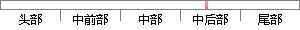

此外，每个时间戳应当将前一个时间戳纳入其随机散列中，每一个后面的时间戳都对前一个时间戳进行增强，从而形成一个链条。
片段位置图

相似结果|
相似片段 1：），每个时间戳将前一个时间戳纳入其随机散列值中，之后的每个时间戳都对之前的时间戳进行增强，这样就形成了一个数据链条。然后比特币网络将该随机散列进行广播，并将之并入一个不断延伸的基于 hashing 的工作量证明链条作为交易记录。
相似片段 2：对区块链中的区块进行嵌套式的哈希运算，将得到的哈希值作为标记来确定区块的先后顺序。按照协议，每个区块的时间戳都将前一个区块的时间戳纳入其哈希值中。这样，区块链中的每一个时间戳都对之前的一个时间戳进行增强
|
※ 片段修改建议 ※
近似词参考：- 此外：另外 别的
- 每个：每一个
- 时间：时候
- 应当：该当 理当 应该
- 每一个：每个
- 后面：背面
- 时间：时候
- 进行：举行
- 增强：加强
- 形成：构成
系统自动生成语句：另外，每个时候戳该当将前一个时候戳纳入其随机散列中，每个背面的时候戳都对前一个时候戳举行加强，从而构成一个链条。
注：本片段修改建议为系统自动生成，仅供参考。